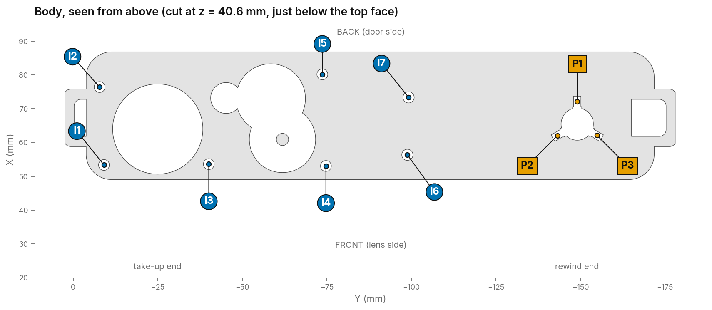
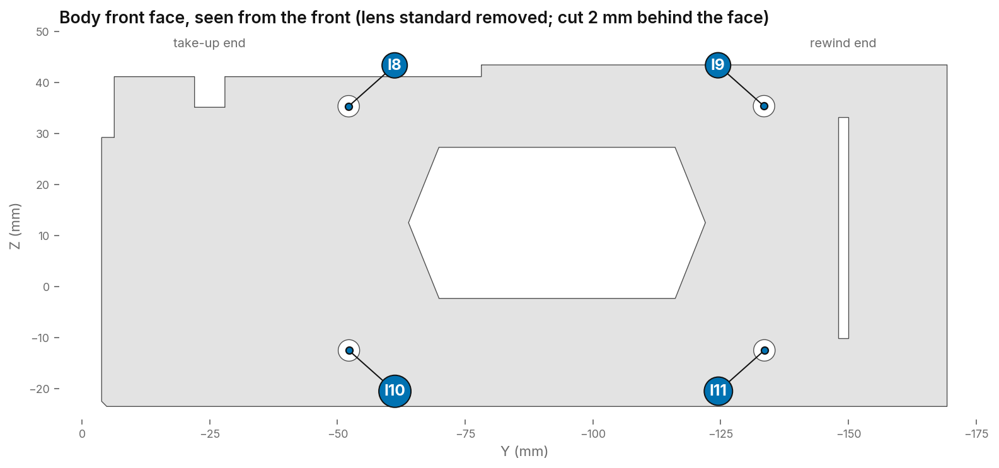
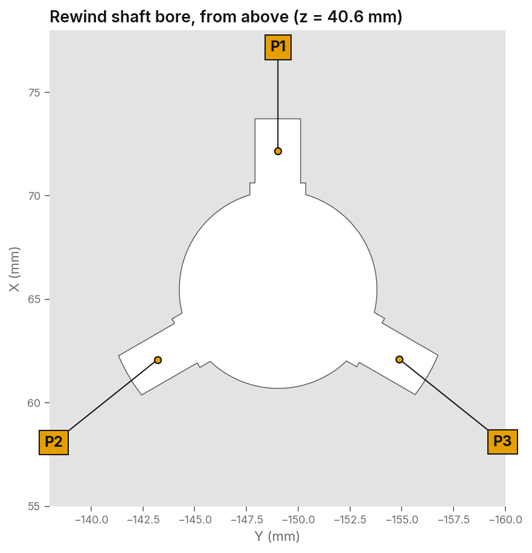
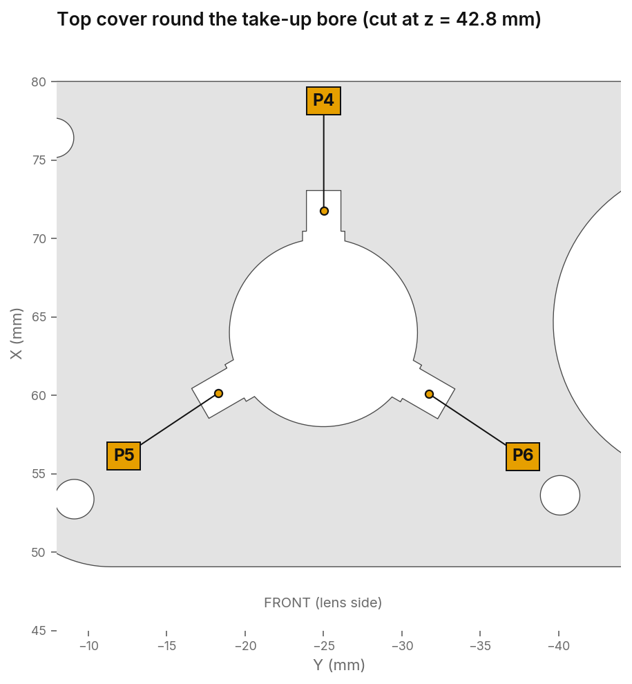
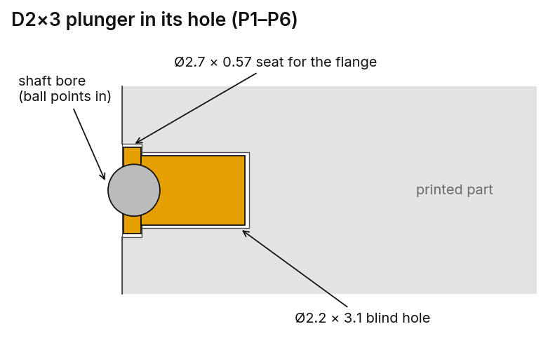
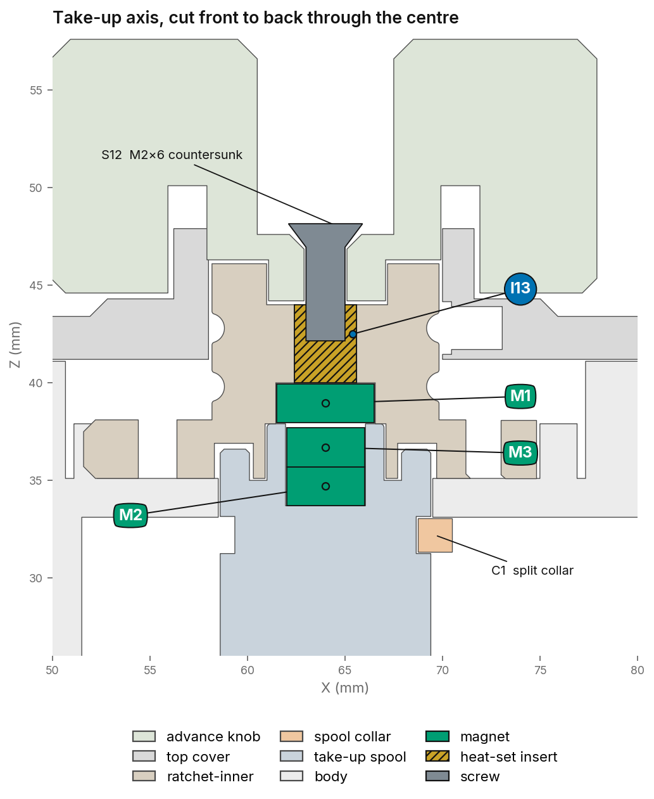
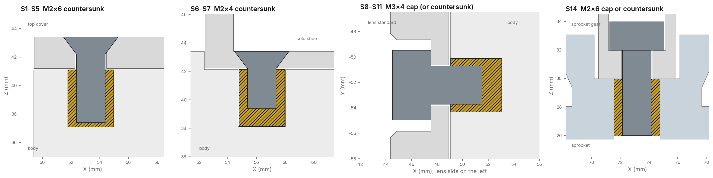
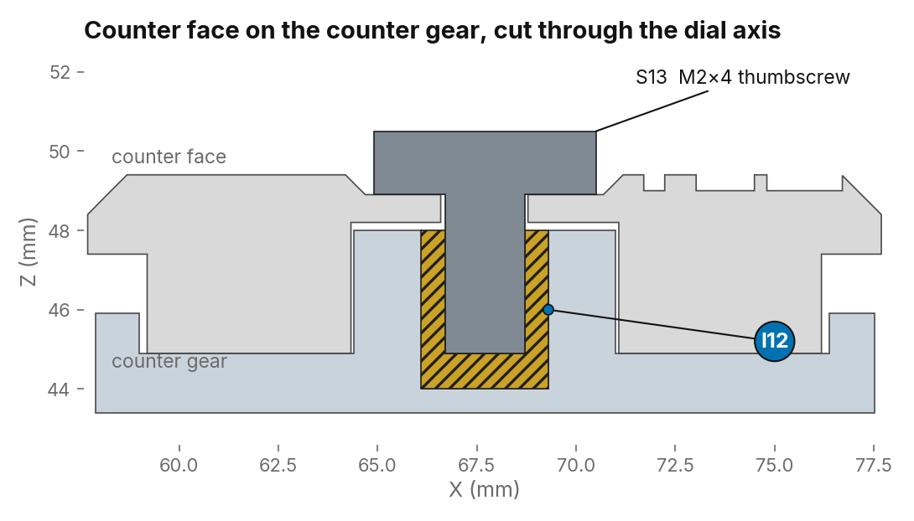
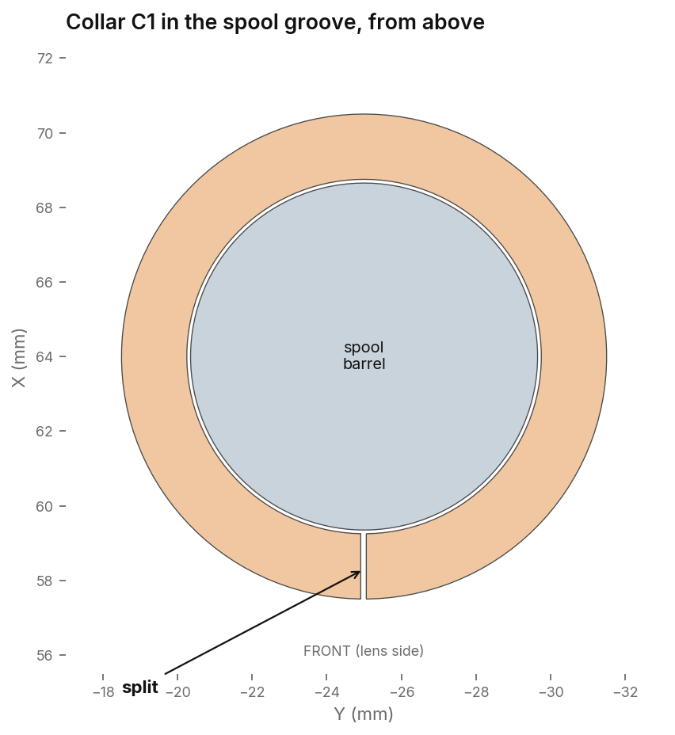
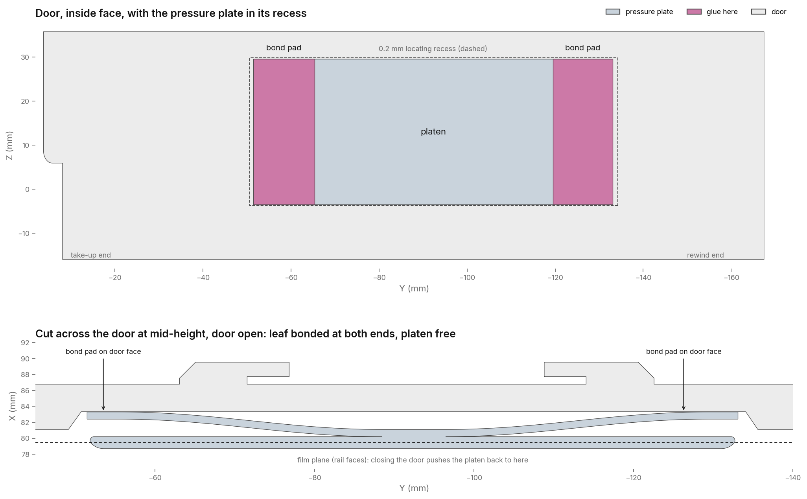

Hardware placement guide
Where every heat-set insert, screw, ball plunger, magnet and bonded part goes.
Every location and screw length below was measured from the remix CAD assembly. Reference codes match the drawings. The remixed body comes two ways, in one piece or as two glued halves, and the hardware is the same for both. Positions are in the CAD assembly frame in millimetres: X runs front (lens) to back (door), Y runs from the take-up end (0) towards the rewind end (−178), Z is up.
Eleven inserts go into the body: seven M2 in the top face (five for the top cover, two for the cold shoe) and four M3 in the front face for the lens standard. Three more M2 inserts go into moving parts: I12 in the counter gear hub, I13 in the top of the inner-ratchet and I14 in the top of the sprocket. Use 4 mm long inserts everywhere. Every hole is 4.0 mm deep. Buy: Amazon ↗ (M2×4), Amazon ↗ (M3×4, not the common 5.7 mm length).


| Ref | Holds | Where | Hole Ø × depth | Insert | X / Y / Z |
|---|---|---|---|---|---|
| I1 | Top cover | Top face, take-up end, front corner | 3.2 × 4.0 | M2 | 53.4 / −9.1 / 41.1 |
| I2 | Top cover | Top face, take-up end, back corner | 3.2 × 4.0 | M2 | 76.4 / −7.8 / 41.1 |
| I3 | Top cover | Top face, front edge beside the take-up bore | 3.2 × 4.0 | M2 | 53.6 / −40.1 / 41.1 |
| I4 | Top cover | Top face, front edge past the gear bay | 3.2 × 4.0 | M2 | 53.1 / −74.7 / 41.1 |
| I5 | Top cover | Top face, back edge past the gear bay | 3.2 × 4.0 | M2 | 80.2 / −73.7 / 41.1 |
| I6 | Cold shoe | Top face, centre of camera, front | 3.3 × 4.0 | M2 | 56.4 / −98.8 / 42.1 |
| I7 | Cold shoe | Top face, centre of camera, back | 3.3 × 4.0 | M2 | 73.4 / −99.2 / 42.1 |
| I8 | Lens standard | Front face, upper, take-up side | 4.2 × 4.0 | M3 | 49.1 / −52.2 / 35.3 |
| I9 | Lens standard | Front face, upper, rewind side | 4.2 × 4.0 | M3 | 49.1 / −133.5 / 35.3 |
| I10 | Lens standard | Front face, lower, take-up side | 4.2 × 4.0 | M3 | 49.1 / −52.3 / −12.5 |
| I11 | Lens standard | Front face, lower, rewind side | 4.2 × 4.0 | M3 | 49.1 / −133.6 / −12.5 |
| I12 | Counter face | Counter gear hub, top | 3.2 × 4.0 | M2 | 67.7 / −63.9 / 48.0 |
| I13 | Advance knob | Ratchet-inner, top hole | 3.2 × 4.0 | M2 | 64.0 / −25.0 / 44.0 |
| I14 | Sprocket gear | Sprocket, top of the shaft | 3.2 × 4.0 | M2 | 73.2 / −45.2 / 30.0 |
Fitting. For PETG, start the insert tip at about 230 °C. Let the insert sink under its own weight with light pressure, keep it square, and stop when it's flush. Face-down on a flat plate while it's still warm is an easy way to square it up. Stand the body on its base for I1–I7 and lay it on its door side for I8–I11.
I12 and I13. I12's pocket is 4.0 mm deep, so press the insert flush with the top of the hub. I14 goes into the top of the sprocket, and the sprocket gear screws down onto it. I13's hole goes right through into the M1 magnet pocket underneath, so press it flush with the top and check from below that no melted plastic has pushed into the magnet pocket.
All six are D2×3 flanged plungers (Ø2 body, Ø2.5 nose flange, Ø1.5 ball) fitted in radial holes. Amazon ↗. Each hole opens into a shaft bore and stops short of the outside wall, so every plunger goes in from inside the bore. The flange sits in its seat flush with the bore wall and the ball points at the shaft.



| Ref | Part | Points from |
|---|---|---|
| P1 | Body | Back of the rewind bore |
| P2 | Body | Front, take-up side of the rewind bore |
| P3 | Body | Front, rewind-end side of the rewind bore |
| P4 | Top cover | Back of the take-up bore |
| P5 | Top cover | Front, take-up end side of the bore |
| P6 | Top cover | Front, gear-bay side of the bore |
Fitting. The holes are drawn Ø2.2 × 3.1 mm with a Ø2.7 × 0.57 mm flange seat. With a 0.4 mm nozzle they print close to Ø2.0, which gives a press fit. Push the plunger body-first from inside the bore with a flat-ended rod until the flange sits in its seat and is level with the bore wall. If one is loose, put a small drop of CA on its body before pressing it in. Keep glue away from the flange and the ball, or the ball will stick.
The camera works without them, but they hold the inner-ratchet firmly down on the spool head, so fit them if you can. Buy: Amazon ↗ (Ø5×2), Amazon ↗ (Ø4×2). All three sit on the take-up axis and hold the inner-ratchet down on the take-up spool head. When the camera is assembled, the Ø5×2 magnet faces the Ø4×2 stack across a gap of about 0.2 mm.

| Ref | Magnet | Fits from | |
|---|---|---|---|
| M1 | Ø5 × 2 | Ø5.1 × 2.1 | Underside of the inner-ratchet, pressed to the pocket floor |
| M2 | Ø4 × 2 | Ø4.1 × 4.2 | Top of the spool head, at the bottom of the pocket |
| M3 | Ø4 × 2 | same pocket | On top of M2, level with the head |
Polarity. The top face of the M2/M3 stack has to attract the exposed face of M1. Let M2 and M3 snap together into a stack first. Then touch M1 to the top of the stack and mark M1's exposed face with a pen dot before separating them. Glue M1 with the dot facing out of its pocket and the stack with its free face up, then check the attraction with the parts dry-fitted before the glue cures.
Each length is the longest standard screw that stays inside its insert without bottoming out. It was worked out from the head seat, the clamped part and the depth of the hole below.

| Ref | Screw | Qty | Holds | Into | Room below the tip | Thread in insert | Buy |
|---|---|---|---|---|---|---|---|
| S1–S5 | M2×6 countersunk (ISO 10642) | 5 | Top cover to body | I1–I5 | 0.2 mm | 3.8 mm | Amazon ↗ |
| S6–S7 | M2×4 countersunk (ISO 10642) | 2 | Cold shoe to body | I6–I7 | 1.3 mm | 2.7 mm | Amazon ↗ |
| S8–S11 | M3×4 socket cap (ISO 4762) or countersunk (ISO 10642) | 4 | Lens standard to body | I8–I11 | 1.5 mm | 2.5 mm | Cap ↗ CSK ↗ |
| S12 | M2×6 countersunk (ISO 10642) | 1 | Advance knob to inner-ratchet | I13 | 1.65 mm to M1 | 2.35 mm | Amazon ↗ |
| S13 | M2×4 thumbscrew, flat underside | 1 | Counter face to counter gear | I12 | 0.9 mm | 3.1 mm | Amazon ↗ |
| S14 | M2×6 socket cap (ISO 4762) or countersunk (ISO 10642) | 1 | Sprocket gear to sprocket | I14 | 0.25 mm | 4.0 mm | Cap ↗ CSK ↗ |
Lengths. The cold shoe (M2×4) and lens standard (M3×4) lengths are proven on the printed camera and leave plenty of clearance. The M2×6 cover and sprocket screws are the longest that fit: the next size up bottoms out. The S1–S5 figures are with the cover screwed down, which seats it 0.1 mm below its drawn height. S14 works as a socket cap or a countersunk head, whichever you have, and either way it takes the full depth of its insert, so run it down gently and stop when it seats. Don't go longer on S12 either: an M2×8 would reach 0.35 mm into the M1 magnet pocket.
Heads. The knob's seat for S12 is a Ø3.7 × 90° countersink 0.75 mm deep, so a standard M2 flat head (Ø3.8) finishes level with the knob face and takes 2.35 mm of thread. The countersinks in the cover and cold shoe are Ø3.7–3.8 at 90°, so M2 flat heads finish flush or a hair proud. The lens-standard counterbores are Ø7.3 × 3.1 deep, so either an M3 cap head (Ø5.5 × 3) or an M3 countersunk head sits below the surface.

Counter face. The face starts at 25 and counts up: 25 is the loading position, then winding on takes you to 1, 2, 3 and so on. There is no zero. Lay the face on the hub with 25 against the body marker and finger-tighten S13. The face grips on friction, so to reset it for a new roll you loosen the thumbscrew, turn 25 back to the marker, and tighten again. Don't use thread lock.
C1 is a printed part, not a bought one: print it with the rest of the camera from the files in the repo, where it is named takeup-washer-stopper. It is a split ring (Ø9.45 bore × Ø12.95 × 1.7 mm) that stops the take-up spool lifting out of the body. It sits in the groove just below the spool head (Ø9.3 at the root), directly under the body's take-up bore. The collar is wider than the bore, so once it's in, the spool can't pull up through the top.

G1 is one printed part: a rigid platen on a single thin leaf. The leaf joins the platen in the middle and has a bond pad at each end. Glue only the two end pads to the door, never the platen or the middle of the leaf. The door's inside face has a shallow 0.2 mm recess (83.6 × 33.5 mm) that locates the plate, leaving about 1 mm spare at each end and 0.25 mm top and bottom.

Gluing. Clean both surfaces with IPA. Put a thin line of CA or a strip of thin double-sided tape on each end pad only. Seat the plate square in the recess with the platen facing the film, and press on the pads alone for 30 seconds. Keep glue out of the gap under the leaf, or the plate stops flexing.
Seating and preload. Both pads sit flat on the door's inside face in the recess. With the door open, the leaf holds the platen 1.65 mm proud of its working position. Closing the door on loaded film pushes the platen back onto the film rails and flexes the leaf by about 0.8 mm, which gives the pressure on the film. Don't shim or glue anything under the leaf to take up that gap.
Skip this if you printed the one-piece body. The two halves meet on a flat seam about 34 mm above the base. The bottom half carries a 2 mm ridge that runs right around the film chambers and the film path; the top half has the matching groove. Light arriving along the glue line has to climb over that step to reach the film, which is why only the chambers and the path are ridged and the rest of the seam is plain.
Four alignment pegs set the halves: Ø3.8 × 2 mm posts inside the top half's groove, dropping into Ø4 mm holes in the ridge. Dry-fit before any glue. The halves should sit down with no rock and no light gap at the seam; if they rock, the ridge is not seating and the groove needs a clean-up rather than more clamp.
Gluing. Fit every insert, plunger and magnet first, while the halves are still separate and easy to hold. Then run a thin bead of CA or epoxy on the flat land outside the ridge, press the halves together on the pegs, and clamp lightly until it cures. Keep glue off the ridge crest and out of the groove, or the halves will stand proud and leave the gap you were trying to close.
The socket is printed, not an insert: a 3/8"-16 thread moulded straight into the base on the centreline, five turns and 8.5 mm deep, at 67.4 / −86.1 / −23.5. Nothing is pressed or glued into it.
Most tripods and quick-release plates are 1/4"-20, so fit a 3/8" to 1/4" bushing and leave it in. Amazon ↗
First thread. Start the bushing by hand and stop as soon as it seats. A printed thread strips if you drive it with a tool, and a 1/4" screw run straight into the 3/8" hole will tear it out. If the thread is tight from the print, run the bushing in and out a couple of times to clear it rather than cutting it.
These are unchanged from Denis's build and are not in the printed files. The remix needs all of them.
| Item | What for | Buy |
|---|---|---|
| Black flocked self-adhesive paper | Lining the film chambers and the inside of the door to kill reflections and stray light. Full-size templates are in flocking/ in the repo. | Amazon ↗ |
| Black light-seal foam | Sealing the door where it closes onto the body | Amazon ↗ |
| Rigid stainless wire, 0.6–0.8 mm | Springs and linkages in the original mechanism | Amazon ↗ |
| Superglue (CA) | Magnets, the pressure plate pads, and the body seam on the two-piece body | Amazon ↗ |
Order. Flocking and foam go in last, after everything else is fitted and the camera has been dry-run with the back open. They are the one thing you cannot fit around.